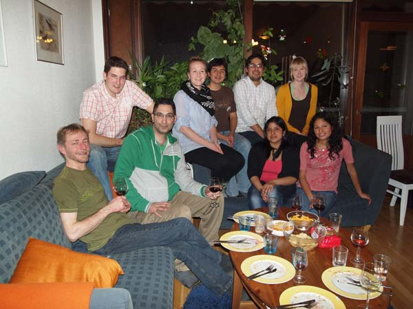
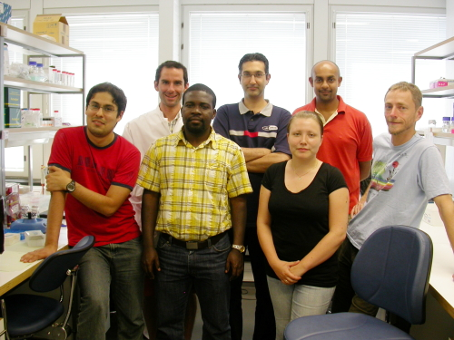

Postdoc at the Laboratory of Genetics, Department of Biology, University of Turku working on rates of diversification in Lepidoptera, as well as continuing to develop the NSG Voucher Database
Tobias Malm
Postdoc at the Laboratory of Genetics, Department of Biology, University of Turku working on rates of diversification in Hymenoptera, as well as continuing to develop the NSG Voucher Database
Anu Veijalainen
Postgraduate student at the Department of Biology, University of Turku working on the diversity of ichneumonid wasps in the Amazon region
Terhi Honkola
Postgraduate student at the Department of Biology, University of Turku working on the evolution of the Finno-Ugric languages
Eero Vesterinen
Postgraduate student at the Department of Biology, University of Turku working on the diet of bats using molecular methods

Niklas, Eero, Reza, Anu, Pavel, Carlos, Evelyn, Terhi, Carol
Former members of NSG:
Elisabet Weingartner
PhD on speciation in Polygonia, Pararge and Celastrina at Department of Zoology, Stockholm University. Defended her thesis in October 2008, thesis title "Phylogenetic perspective on host plant use, colonization and speciation in butterflies".
Kwaku Aduse-Poku
Master's project on the genus Charaxes in 2008. Currently doing a PhD at Cambridge University with Paul Brakefield
Heike Witthauer
Undergraduate student from the University of Dresden who has done her Master's thesis in NSG on the genus Erebia in 2010.
PhD on Noctuoidea systematics completed in June 2012 at the Laboratory of Genetics, Department of Biology, University of Turku, currently a postdoc at the University of Guelph, Canada
Undergraduate student at the Laboratory of Genetics, Department of Biology, University of Turku who worked on the temporal framework of speciation in Satyrinae, currently doing a PhD at the University of South Bohemia, Czech Republic with Milan Janda

Carlos, Julien, Kwaku, Reza, Jenni, Ullasa and Niklas